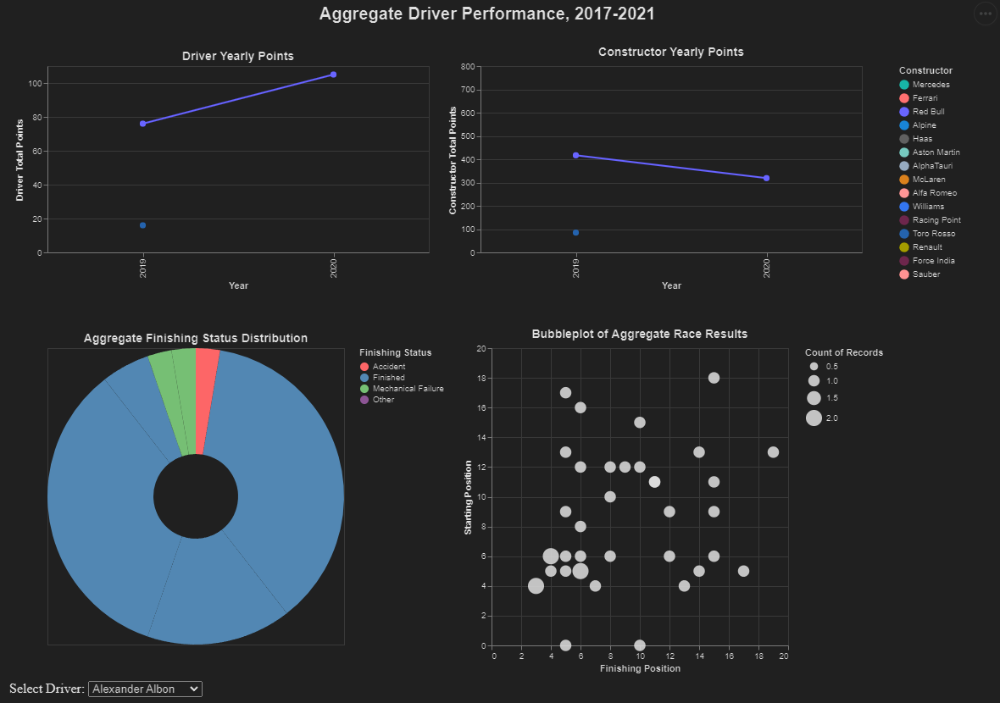
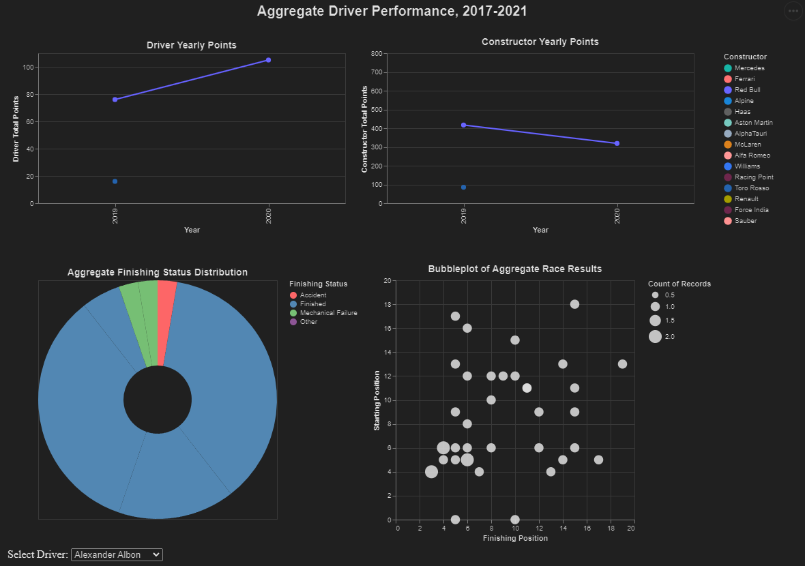

Elements of Data Visualization CS329E
Primary Skills/Tasks
- Psychology and science behind the design of effective data visualizations
- Altair framework for implementation of visualizations in python.
- Pandas library for data formatting and aggregation in python.
This class, taught by Anna Chaney, Covered both the science and programming required to create effective data visualizations in python, which could then be displayed interactively in standard HTML. I learned the most from the science side of the course, including how the brain processes information “channels” and how some patterns allow the brain to fast-track scanning. On the code side, becoming much more familiar with pandas and data frames was incredibly helpful in augmenting Altair’s limited data formatting capabilities.
Our final group visualization, which I worked on with Rosemarie Pousset and Mihir Kamble, can be found in this part 1 and part 2. Below you can find images of that project.
 
